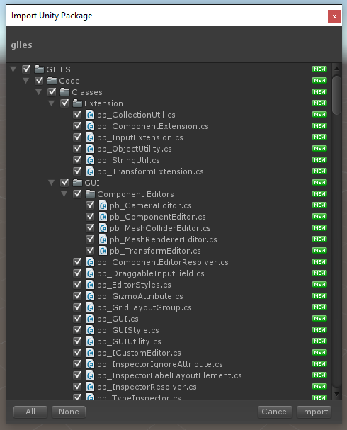

Quick Start Tutorial
This guide will take you through the basic steps involved in getting GILES up and running in your project.
Install
The first step to integrating GILES is to import the giles.unitypackage file into your Unity project. If you have installed GILES from the Asset Store, this step should be taken care of for you. If you've downloaded GILES from Github or the User Toolbox, you'll need to open your Unity project and drag the .unitypackage into your Projet pane. Make sure that all the assets are selected in the Package Import window.

Set the .NET Profile
If after importing GILES there are now errors in the Console, don't fret. This just means that your Api Compatibility Level is set to .NET 2.0 Subset.
Open Edit > Project Settings > Player and in the Inspector change Api Compatibility Level to .NET 2.0.
Add the Level Editor Scene
Next you'll need to make the Level Editor scene available for users to access. For this tutorial we'll just open the Level Editor to a new level every time, though it is possible to set up a modal window to select an existing level to edit. That scenario will be covered in a later tutorial (plus the default Level Editor scene includes a menu item to open a file browser).
The process is just like adding any other scene to your project:
- Open File / Build Settings.
- Add GILES / Example / Level Editor to the Scenes In Build list.
Now in your menu scene simply open the "Level Editor" scene. Check out GILES / Scenes / Main Menu for a demonstration of this (specifically, in the hierarchy Canvas/Panel_Background/Buttons/Btn_LoadMapEditor).
// Unity 5.3 or greater
SceneManager.LoadScene("Level Editor");
// Or in Unity 5.2
Application.LoadLevel("Level Editor");
That's it! The Level Editor is now accessible and ready to start building new levels. The next step is to give the player some blocks to build with.
Adding Resources to the Editor
Now that the Level Editor is accessible and running, you'll need some building blocks to populate those levels.
GILES provides 2 ways of making resoures available to the player. The first (and easiest) method is to use the Resources / Level Editor Prefabs folder.
- Create a new folder named Resources.
- Inside that folder, add a new folder named Level Editor Prefabs.
- Drag a prefab into the Resources/Level Editor Prefabs folder. GILES will automatically recognize this as a new resource and tag it with a
pb_MetaDataComponent.

If there is not a pb_MetaDataComponent on the prefab, make sure that the folder names are correct (capitalization matters) and that the object is a prefab (Assets are not allowed).
The alternative method involves creating Asset Bundles. These are handy for when you want to ship additional resource packs separate from the main game. Check out Adding Resources for more information on building Asset Bundles.
Loading a Saved Scene
Now that the player has built a level, you'll need to load and play it somehow. In summary, you'll load a new scene then ask GILES to instantiate all the objects in a .json scene file. It's easy to extend this to include whatever custom loading steps you'd like, but if you just want to load a new scene GILES includes a utility script named pb_SceneLoader.cs that makes this super simple. For this tutorial, we'll use the pb_SceneLoader approach.
Somewhere in your main menu, hook up a button to call
// Where the argument is a relative or absolute path to your a saved level.
pb_SceneLoader.LoadScene("Assets/MySavedLevel.json");
pb_SceneLoader is a singleton, so there's no need to worry about instantiating or managing it's lifecycle.
That's it! The pb_SceneLoader singleton will handle opening a new scene for you and loading in the saved level. If you get a black screen, chances are you either:
- Didn't include a camera object in the saved scene.
- Didn't include any lights in the saved scene.